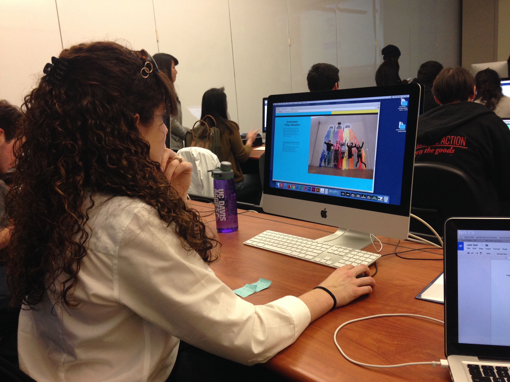

Navigate through the site, use the categories section to visit at least 2 sections, click what you think are links.
Both users expected the website to be able to fit large screens or any other size. The images that I originally had were not large enough to compensate for the increase in size. Furthermore, they expressed that they wanted more engagement with the website or interactivity rather than the site being only informative. The relationship between the 'back to the top' button and the categories navigation was clearly understood. However, the navigation itself felt jumpy and the users often got lost as to where they were within the page.
The second prototype received much more positive feedback in that the overall color is lighter, the navigation is much more clearly defined, and the images work well with the design. The information is concise and keeps the reader's attention throughout the site. The users wanted the steps to register to be a bit more informative as first years may not know the terms that upper classmen are familiar with.